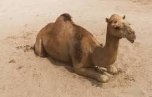

MAMIFEROS

Camelus es un género de mamíferos artiodáctilos de la familia Camelidae que incluye a las tres especies vivientes de la familia originarias del Viejo Mundo,
que son denominadas popularmente como camellos y dromedarios. Como todos los camélidos, los camellos son artiodáctilos, o ungulados con un número par de pezuñas.
habitan en el norte de África, en parte de Oriente Medio y Asia central. Las jorobas o gibas son una característica propia de este tipo de mamíferos de las zonas áridas que usan para almacenar un tipo de grasa de la que, después de ser metabolizada, pueden extraer agua.
Los camellos tienen la reputación de ser criaturas malhumoradas y obstinadas que escupen y dan patadas. En realidad, suelen estar de buen humor, tranquilos y son inteligentes. El rugir y el ruido que hacen cuando son cargados y cuando han de levantarse es como el gruñir y respirar fuerte de un levantador de pesos en acción, y no un signo de descontento cuando tienen que trabajar.
CARACTERISTICAS
- Los camellos son unos animales con una esperanza de vida que puede llegar incluso a los 50 años
- Los camellos adultos pueden llegar a medir casi dos metros en sus hombros y más de dos en la zona de la joroba.
- Pueden llegar a correr a una velocidad constante de 40 km por hora y a hacer sprints de 65 kilómetros por hora.
- Estos animales pueden alcanzar pesos que van desde los 300 hasta casi los 700 kilos.
- Se trata de animales rumiantes que no tienen cuernos ni hocico y cuentan con unas patas muy largas y también flacas.